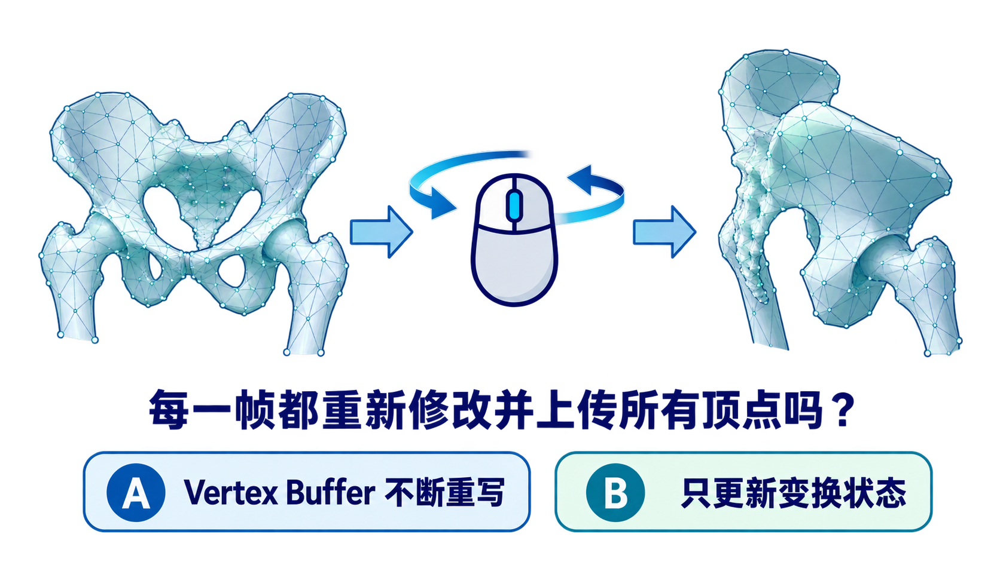
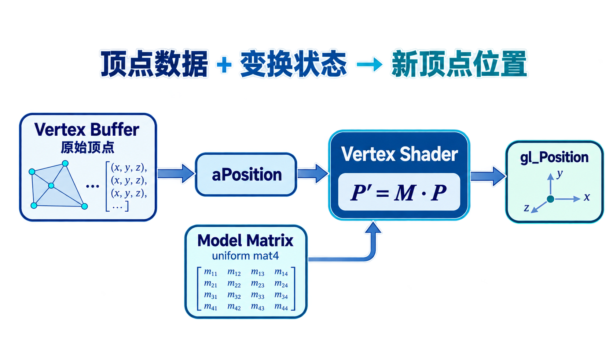
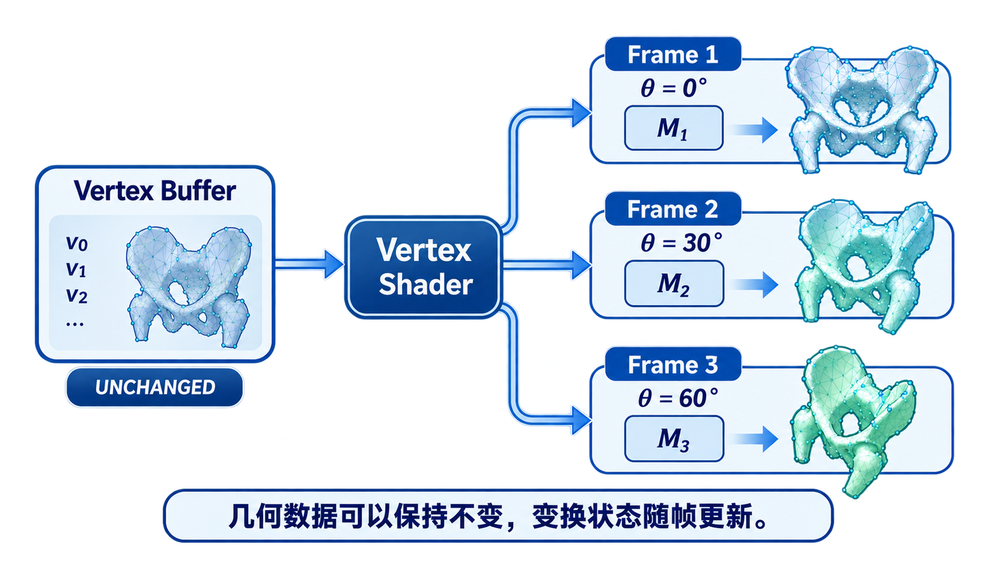
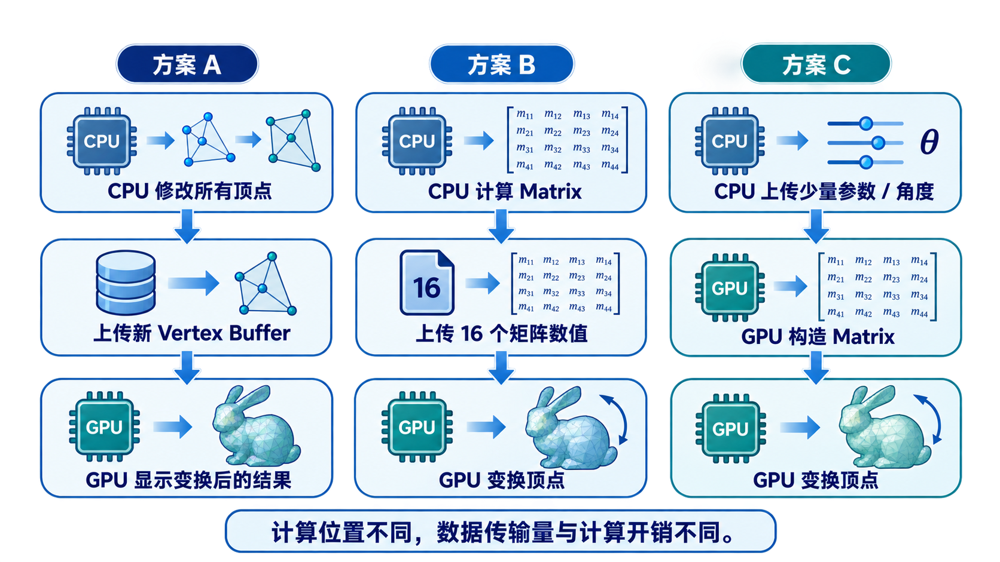
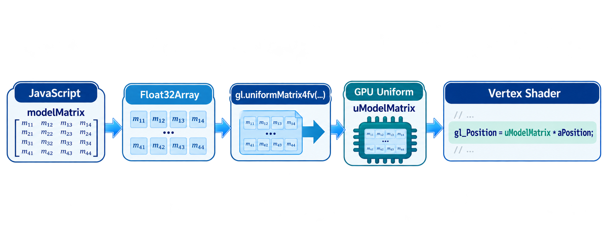
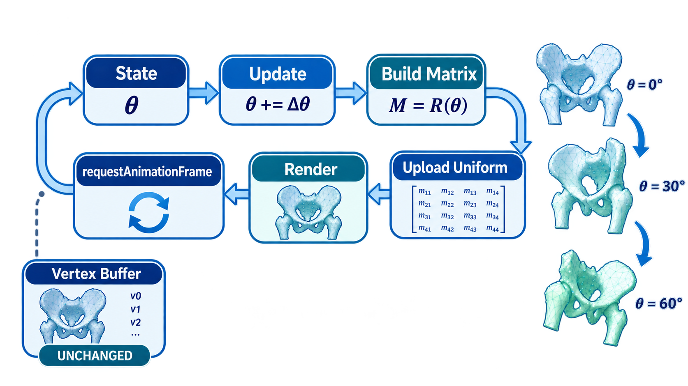
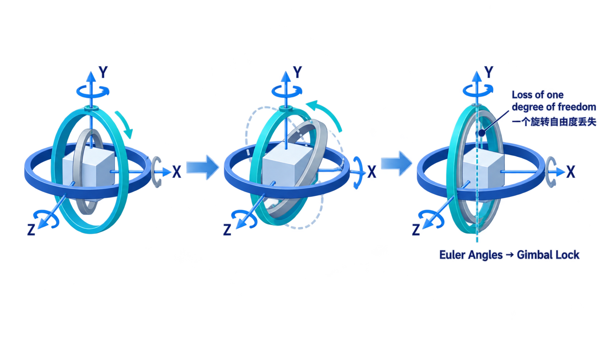

矩阵库 · uniformMatrix4fv · 顶点着色器 · 实时重绘
拖动鼠标时，复杂医学模型实时旋转。每一帧都重新计算并上传所有顶点吗？

Vertex Buffer不断重写
只更新变换状态
先投票，稍后用Demo观察。
在WebGL2中，应用程序维护矩阵，通过uniform传入Shader，由Vertex Shader显式计算新顶点位置。

很多交互式旋转中，原始几何数据可以保持不变；每帧更新的是变换矩阵或旋转参数。

观察矩阵如何从 JavaScript 进入 GPU Uniform，并改变观察顶点的 gl_Position。
透视矩阵怎样从 JavaScript (CPU) 传入 GPU Uniform，观察单顶点 \(P' = M \cdot P\) 的计算过程与 CPU/GPU 负载分工。
若采用“CPU计算Model Matrix并上传Uniform”的方案，模型旋转时通常每帧更新的是？
原始Vertex Buffer
uModelMatrix
HTML按钮文本
答案：B。
同样让模型旋转，可以选择不同的CPU/GPU分工方式；没有一种在所有场景下绝对最好。

const modelLoc = gl.getUniformLocation(program, "uModelMatrix");
gl.uniformMatrix4fv(
modelLoc,
false,
modelMatrix
);
找到Shader中的uniform位置。
把4×4矩阵数据送入GPU。
WebGL中矩阵转置参数必须为false。
#version 300 es
in vec4 aPosition;
uniform mat4 uModelMatrix;
void main() {
gl_Position = uModelMatrix * aPosition;
}
真正改变顶点位置的是顶点着色器中的矩阵乘法。
从JavaScript中的矩阵，到GPU中的uniform，再到Vertex Shader中的乘法，需要一条明确的数据通道。

向AI提问：“WebGL2中定义Model Matrix以后，GPU是不是会自动把它作用到所有顶点？”
第三章的动画循环在这里变成：更新状态 → 构造矩阵 → 上传uniform → 重新渲染。

三维旋转不仅是矩阵乘法问题，还涉及旋转表示的选择。欧拉角直观，但存在顺序依赖和万向节锁问题。

本课把数学矩阵、JavaScript状态、uniform变量和Vertex Shader连接起来，解释三维医学模型为何能实时交互。
复杂医学Mesh通常不需要每帧重新上传全部顶点。
应用程序每帧更新Model Matrix或角度参数，把变化状态送入GPU。
gl_Position = uModelMatrix * aPosition 是矩阵真正作用到顶点的位置。
改变一个三维医学模型的姿态时，是否必须每帧重写整个Vertex Buffer？为什么？
期望回答：不一定。常见做法是保持几何Buffer不变，更新变换矩阵或参数，通过Vertex Shader计算新的顶点位置。